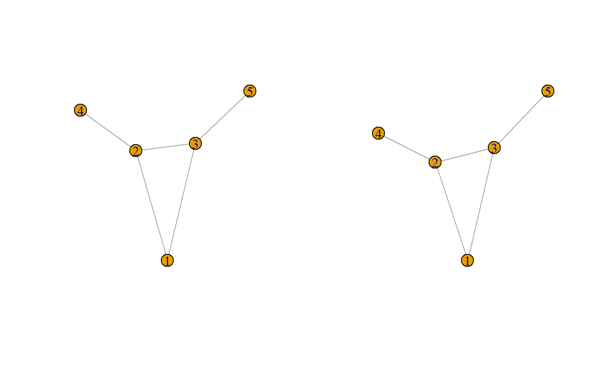
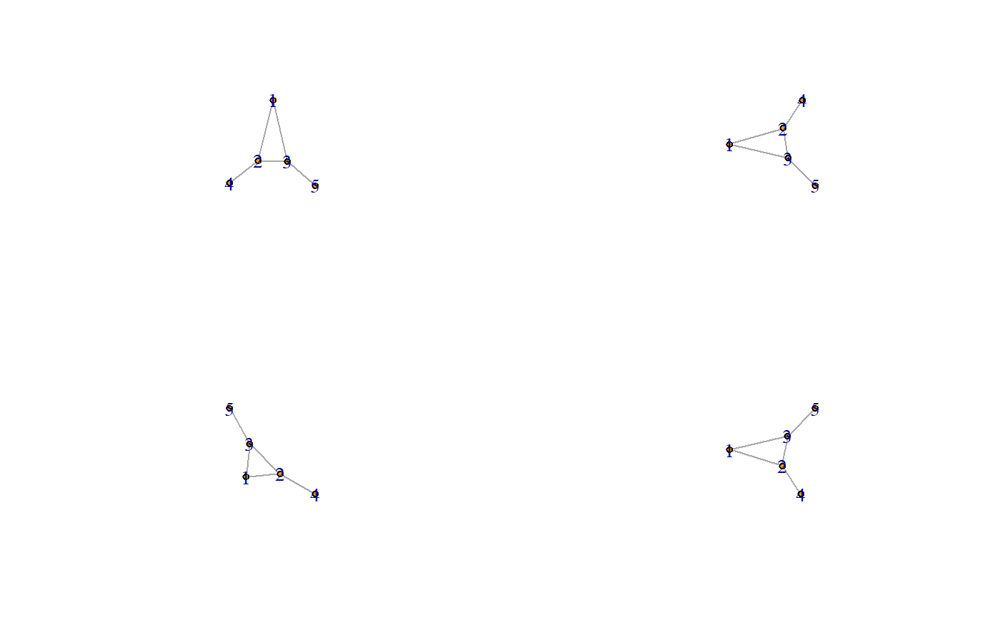
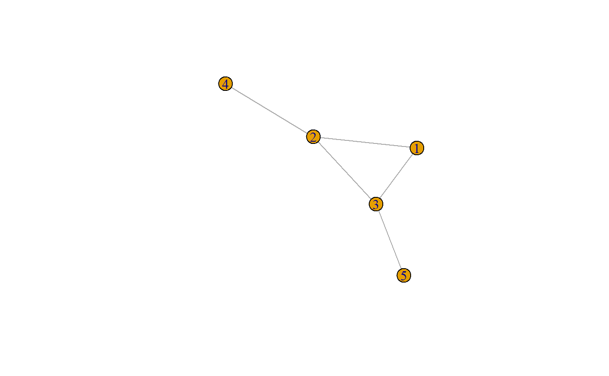
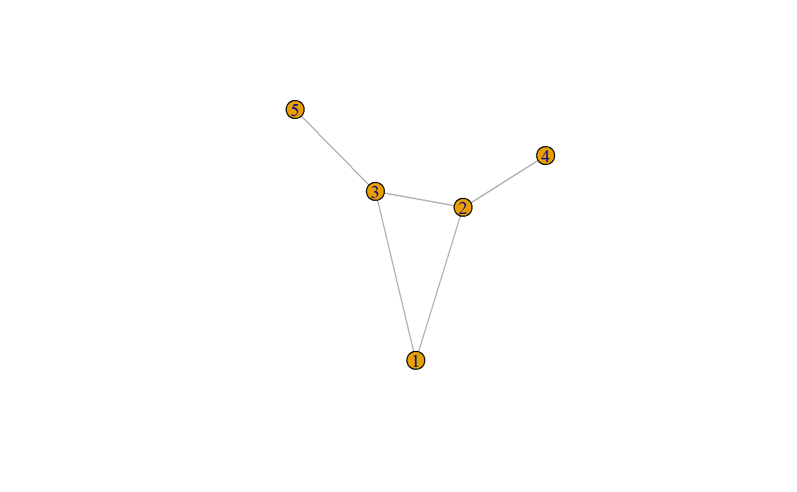
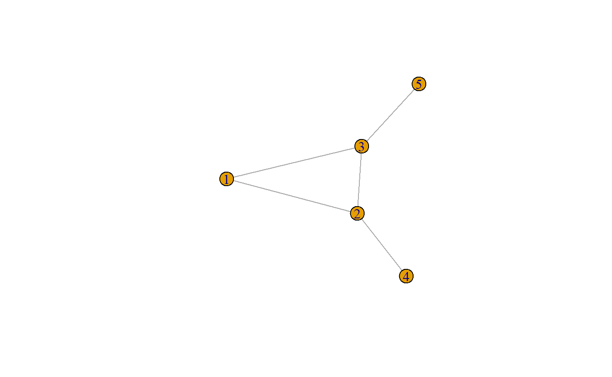
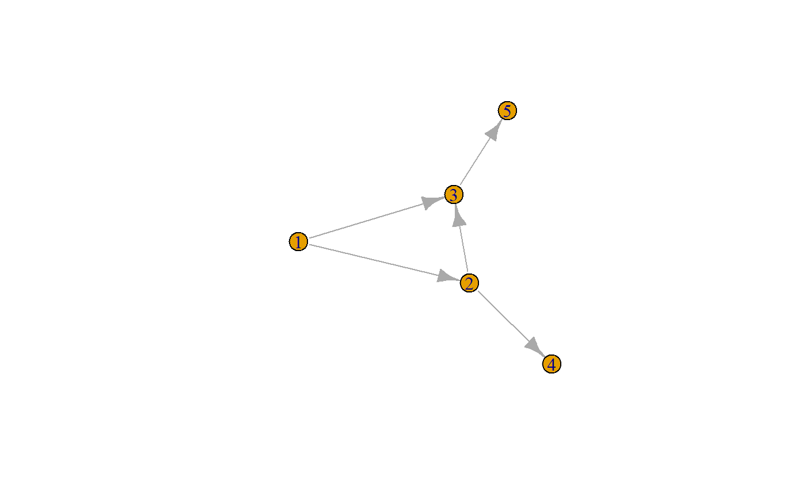

igraph.RmdThe igraph package is a very popular package for graph manipulation. It is mostly implemented in C, with interface packages in R and Python. It is written and maintained by Gabor Csardi and Tamas Nepusz. I have mostly interacted with it from R. Being relatively new to R and focused on the tidyverse, I have had some trouble learning it due to its sprawling size and multiple styles. This document is intended as a reference so that I can remind myself about the mapping of R/igraph functions onto graph concepts as I understand them.
library(igraph)
#>
#> Attaching package: 'igraph'
#> The following objects are masked from 'package:stats':
#>
#> decompose, spectrum
#> The following object is masked from 'package:base':
#>
#> union
library(ggraph)
#> Loading required package: ggplot2
library(gridExtra)There are a variety of igraph functions for constructing igraphs.
set.seed(11)
b1 <- make_graph("bull")
b2 <- make_graph(c(1, 2,
1, 3,
2, 3,
2, 4,
3, 5),
directed = FALSE)
par(mfrow = c(1, 2)); plot(b1); plot(b2)
The two “bull” graphs have the same set of five nodes, connected in the same ways. The plotting orientation is somewhat different, because the particular layout is not an inherent aspect of the graph, so some plotting choices are randomized with each plot. Even the same plot multiple times appears different.

More ways to construct the bull:
library(tibble)
#>
#> Attaching package: 'tibble'
#> The following object is masked from 'package:igraph':
#>
#> as_data_frame
adj_list_tibble <- tribble(
~from, ~to,
1L, 2L,
1L, 3L,
2L, 3L,
2L, 4L,
3L, 5L
)
b3 <- graph_from_data_frame(adj_list_tibble, directed = FALSE)
plot(b3)
adj_matrix <- matrix(
data = c(FALSE, TRUE, TRUE, FALSE, FALSE,
TRUE, FALSE, TRUE, TRUE, FALSE,
TRUE, TRUE, FALSE, FALSE, TRUE,
FALSE, TRUE, FALSE, FALSE, FALSE,
FALSE, FALSE, TRUE, FALSE, FALSE),
byrow = TRUE, ncol = 5
)
b4 <- graph_from_adjacency_matrix(adj_matrix, mode = "undirected")
plot(b4)

While all of these graphs appear quite similar, igraph sees some distinctions.
b1 # uses print.igraph method
#> IGRAPH 981c2a6 U--- 5 5 -- Bull
#> + attr: name (g/c)
#> + edges from 981c2a6:
#> [1] 1--2 1--3 2--3 2--4 3--5b1[]
#> 5 x 5 sparse Matrix of class "dgCMatrix"
#>
#> [1,] . 1 1 . .
#> [2,] 1 . 1 1 .
#> [3,] 1 1 . . 1
#> [4,] . 1 . . .
#> [5,] . . 1 . .
attributes(b1)
#> $class
#> [1] "igraph"
graph_attr(b1) # returns notable graph name, which didn't show before!
#> $name
#> [1] "Bull"
b1$name
#> [1] "Bull"
We want to see if vertices are indirectly connected to other vertices
distances(db, mode = "out") %>% is.finite()
#> [,1] [,2] [,3] [,4] [,5]
#> [1,] TRUE TRUE TRUE TRUE TRUE
#> [2,] FALSE TRUE TRUE TRUE TRUE
#> [3,] FALSE FALSE TRUE FALSE TRUE
#> [4,] FALSE FALSE FALSE TRUE FALSE
#> [5,] FALSE FALSE FALSE FALSE TRUEReferences:
igraph docs
https://kateto.net/wp-content/uploads/2016/01/NetSciX_2016_Workshop.pdf
matrix algebra for transitive closure https://www.ics.uci.edu/~irani/w15-6B/BoardNotes/MatrixMultiplication.pdf
This is where I learned about b1[] showing the matrix.